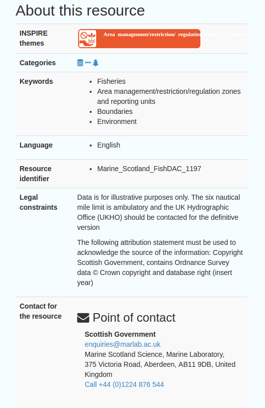
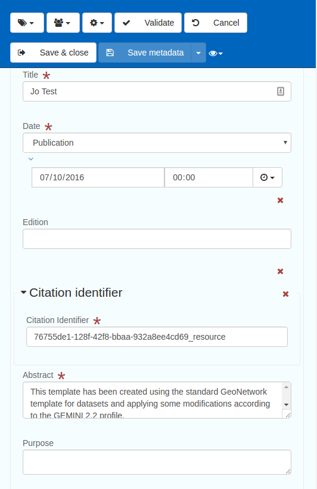
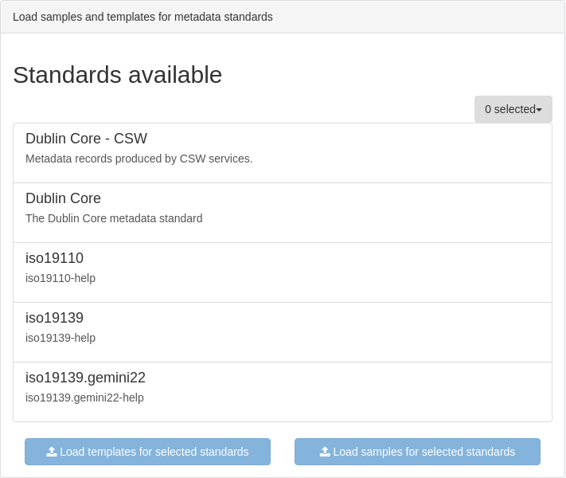
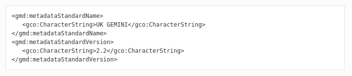
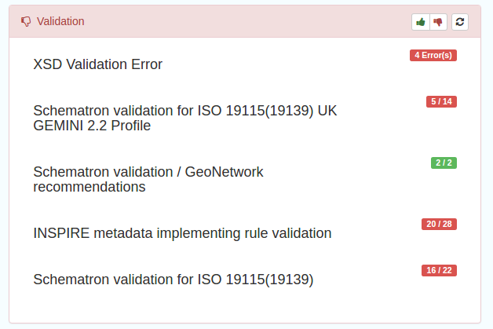
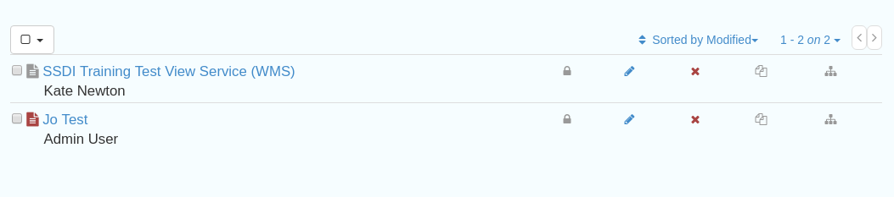
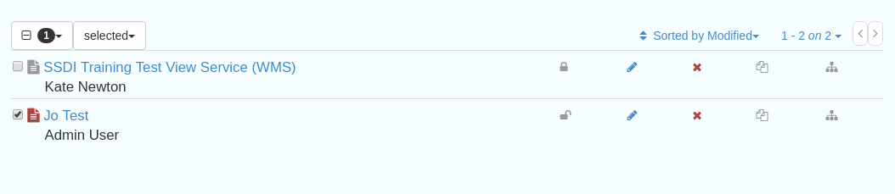

SSDI Metadata Portal
User Training
Who am I?
Jo Cook, Metadata Lead Consultant, Astun Technology
Astun's Role
We're responsible for setting up the new SSDI catalogue, importing existing records, providing training, customising the interface, and liaising with core developers to provide bug fixes and enhancements.
Today's Training Aims
- To provide an overview of the new interface and documentation
- To give an update on Metadata Standards and how they are handled in the new catalogue
- To give a guided walk-through for creating a new record from scratch and validating it
- To give a demonstration of the publication process
- To answer any questions you might have about the new catalogue
Firstly, some housekeeping/logistics
- Metadata Portal URL: https://www.spatialdata.gov.scot
- Documentation URL: http://scottish-sdi-metadata-portal.readthedocs.io/en/latest/
- WIFI credentials are available
- Username and Password as provided
Overview of new interface
- Latest stable version of GeoNetwork Open Source
- Responsive (works on mobile phones)
- More user-friendly interface
- Online (regularly updated) user guidance
Now responsive!
 Metadata Standards
The new catalogue has the capability to support multiple metadata standards. Gemini 2.2 is now a self-contained standard, separate from ISO19139, and Gemini 2.3 will be a separate standard again within the portal
Standards Enforcement
Metadata Standard Name and Version were dropped from Gemini 2.2 (*) but here are added to all records to help with identification
* They are present in ISO19115/19139 so this approach is allowed in Gemini
Standards Enforcement ctd
Consistency of namespaces and root elements is enforced throughout the catalogue
Imported or harvested records must be post-processed to ensure compliance
See Annex 3 in the User Guidance for further information
Creating and Editing records
- Follow the detailed guidance: http://scottish-sdi-metadata-portal.readthedocs.io/en/latest/ssdi_guidance.html#creating-dataset-and-service-metadata-from-a-template
- Find section on "Adding Discover Metadata to the SSDI"
- Save and Validate as you go!
- But not just yet...
Validation overview
Gemini metadata is validated against 4 rulesets or schematrons and also checks for basic XML validity
Associated Resources Wizard
New feature for adding Coupled Resources (linking datasets to services) and Online Resource Locators (URL giving access to, or information about the data)

Viewing records on the map
If an online resource locator is added that points to a valid WMS layer, then this can be added directly to the map using Add to Map
For services, ignore the Add to Map button and add the GetCapabilities URL directly to the Map Add Layer interface, then choose the appropriate layer
Your turn!
With the detailed guidance http://scottish-sdi-metadata-portal.readthedocs.io/en/latest/ssdi_guidance.html#creating-dataset-and-service-metadata-from-a-template open in a browser tab, find the section on Adding Discovery Metadata to the SSDI
Go to Contribute/Add New Record and choose Dataset/Template for Vector Data in UK Gemini 2.2 rev2
For the Online Resource Locator use the example URL given in the Online Resource section of the guidance
For the Coupled Resource choose the SSDI Training Test View Service (WMS)
Publication
- New setting: "Prevent publication of invalid records" (currently not enabled)
- Publication determined by privileges for "All" Users
- Public records are accessible in the catalogue when not logged in
- Publication status is visible at record level, or in the "Contribute" page
Publication Ctd
 Publication and CSW Endpoints
- Only public records are visible to the CSW endpoint
- Data.gov.uk uses the CSW endpoint to harvest public records
- Use a GetRecordByID request to see what is returned
Important CSW Requests
- GetCapabilities: https://www.spatialdata.gov.scot/geonetwork/srv/eng/csw?version=2.0.2&service=CSW&request=GetCapabilities
- GetRecords: https://www.spatialdata.gov.scot/geonetwork/srv/eng/csw?version=2.0.2&service=CSW&request=GetRecords&typeNames=csw:Record
- GetRecordById (Output Schema Dublin Core): https://www.spatialdata.gov.scot/geonetwork/srv/eng/csw?version=2.0.2&service=CSW&request=GetRecordById&id=76755de1-128f-42f8-bbaa-932a8ee4cd69
- GetRecordById (Output Schema gmd): https://www.spatialdata.gov.scot/geonetwork/srv/eng/csw?version=2.0.2&service=CSW&request=GetRecordById&id=76755de1-128f-42f8-bbaa-932a8ee4cd69&outputSchema=http://www.isotc211.org/2005/gmd